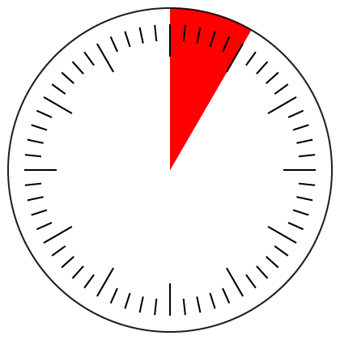

Design as communication
Design sits somewhere between engineering and art. Good engineering must be physically (or at least mathematically) cohesive. Good art is often conceptually cohesive. These two practices are not mutually exclusive. Graphic design’s primary concern is visual communication. What’s the message being conveyed? What’s the target audience? How can that message be expressed through text and image to the audience?
Because graphic design often operates on the surface of things it’s sometimes mistaken as being merely veneer. This is in part due to design existing as a spectrum from surface to depth. Imagine “clock design” for a moment. Or better yet, do an image search for “clock design.” For the majority of of these clocks the design objective was close to the surface—how does one make a clock that visually communicates a personality? But for some clocks the design brief goes deeper: How does one communicate an ever-changing position within repeating and overlapping cyclical units? Are the units we currently use (hours, minutes, seconds) the best units for the job? The deeper brief requires a solution that is not only visual but conceptual, and in this case mathematical. Design can exist as a fusion of art and engineering.
Graphic design is often concerned with visual grids for organizing information. Usually these grids are rectangular by necessity but this is a good opportunity for an ode to the circle. Think about the divisions of a clock face:

Have you ever asked yourself why a circle is divided into 360 degrees, rather than, say, 100? Why are there 60 minutes in an hour? Ultimately why is 12 better than 16, even though 16 rides the strength of a Base 2 series? Might we be better off in our daily lives using Base 12 rather than Base 10?
Modularity & modernism
Let’s have a more informal chat about modularity, modernism, and graphic design. Some starter topics: the printing press, Penguin crime covers by Romek Marber (See Creative Review: Penguin by Illustrators), modularity of typeface glyphs (example in Helvetica).

Saul Bass—pitching a system
Parsing current aesthetic trends can be difficult as it involves both looking at and through the water we’re swimming in. So let’s travel backwards in time a few decades. Imagine you’re an executive at Bell System (now more or less AT&T) in the late 1960’s, sitting in your office just down the road from here at 195 Broadway. Saul Bass is a graphic designer straight out of Mad-Men-era New York City. You’ve hired Saul and his team to re-imagine the Bell System brand as it enters the 1970’s. You want to refresh the look and feel of your corporation—the most advanced telecommunications system in the world—but you may not share Saul’s aesthetic tastes or you may feel that simply illustrating a new logo is enough to do the job; nothing more is required or desired.
Let’s watch the following pitch reel, Saul’s 1969 pitch for Bell Systems identity (courtesy of the AT&T Archives). What are Saul’s arguments? Where does he win you over? Where are you not won over? Does the system feel cohesive? Clearly, Saul’s idea of the Bell System brand extends beyond a logo drawing, but does it reach even further than you imagined? Take note how numbers (the language of telephones) are occasionally used in the pitch, and how telephone conversation is sometimes used as a narrative device that incorporates the anticipated response of the audience.
Looking ahead
The week after next we’ll take a look at useful grid systems and also typography—the rendering and use of letterforms. What are character glyphs really? We’ll look at type nomenclature and trace some typographic history. As the class progresses we’ll revisit Saul Bass and introduce a whole cast of characters that have added color, care, and comedy to the profession.